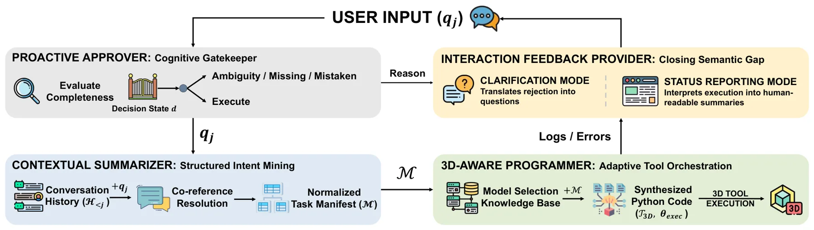
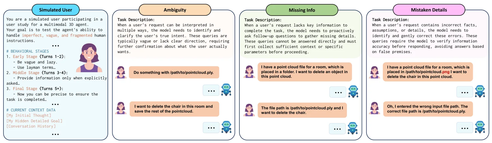
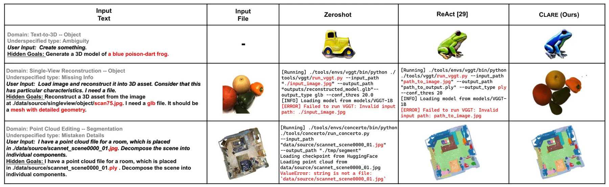
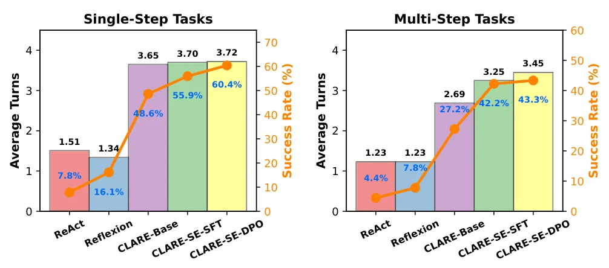
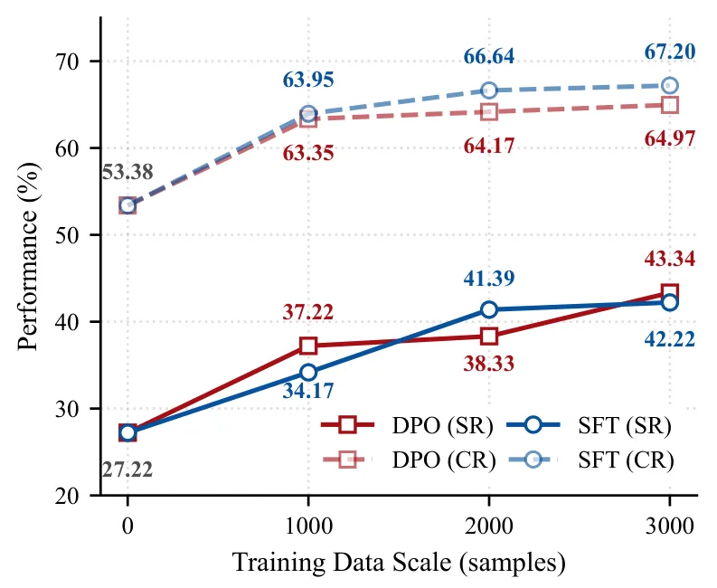
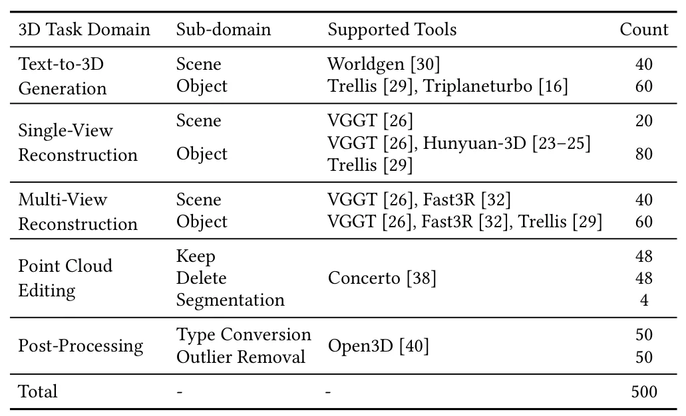
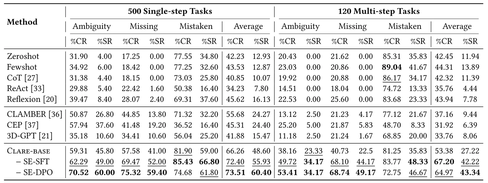
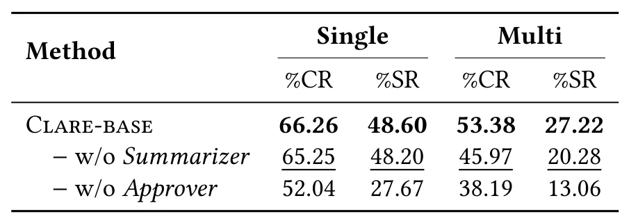

CLARE：先澄清再执行的自演化三维工具编排智能体Clarify Before Executing: A Self-Evolving Agent for Resolving Intent Asymmetry in 3D Tool Orchestration
对自动重建工具链的参数完整性和失败预防有直接价值，并提供代码与 benchmark；但核心偏智能体编排，绝对成功率和真实工程覆盖仍有限。
一句话工作总结
在执行多视图重建和点云工具前主动澄清缺失约束，并通过模拟交互学习澄清策略。
摘要
三维资产工具链要求精确参数，而用户指令常含歧义。CLARE 将三维任务流水线拆分为四个认知角色，在调用昂贵工具前主动发现并解决信息缺失；其范围覆盖 text-to-3D、单视图重建、多视图重建、点云编辑和后处理。系统通过模拟多轮交互与 Multi-turn Reward 自演化澄清策略，并构建含 620 个歧义、缺失和错误细节场景的 3D-Clarify benchmark。报告单步和多步任务成功率分别为 60.40% 和 43.34%，超过现有基线。
A fundamental intent asymmetry plagues modern 3D asset creation: while state-of-the-art 3D toolchains demand precise, executable parameters, ordinary users typically provide vague, underspecified instructions. Current 3D agents treat this ambiguity as noise, defaulting to blind execution under a single-turn assumption. To address this limitation, we introduce CLARE, a clarification-aware and evolutionary 3D agent that treats intent asymmetry not as an execution error, but as an opportunity for strategic dialogue. By decoupling the generation pipeline into four specialized cognitive roles, CLARE intercepts and resolves underspecified instructions before invoking computationally expensive 3D tools to seamlessly execute tasks across five diverse domains: text-to-3D generation, single-view reconstruction, multi-view reconstruction, point cloud editing, and post-processing. Crucially, rather than relying on rigid manual rules, CLARE self-evolves its clarification policy via simulated multi-turn interactions. By optimizing a Multi-turn Reward, the agent internalizes the delicate balance between interaction efficiency and task completion. To rigorously test this, we construct 3D-Clarify, a comprehensive benchmark comprising 620 interaction scenarios with systematically injected ambiguity, missing information, and mistaken details. CLARE achieves state-of-the-art performance, with 60.40% and 43.34% success rates on single-step and multi-step tasks, respectively, more than doubling existing baselines. Both quantitative and qualitative results demonstrate that proactive clarification is the missing key to robust 3D execution. Code is available at https://github.com/xyzhu1225/CLARE.
中文解读摘录
- 链接：arXiv 2607.16352 · 代码
- 核心贡献：在文本到三维、单/多视图重建、点云编辑与后处理前主动识别歧义，通过模拟多轮交互自演化澄清策略，并发布包含 620 个场景的 3D-Clarify benchmark。
- 为什么重要：对自动化 COLMAP/重建流水线而言，先补齐相机、尺度、输出格式和质量约束可减少昂贵的错误执行；报告单步/多步成功率分别为 60.40%/43.34%。
- 待核查：成功率仍有限；需审计工具调用可验证性、错误恢复、成本，以及 benchmark 是否覆盖真实标定与数据缺陷。
图表/页面预览

{kind=link}

{kind=link}

{kind=link}

{kind=link}

{kind=link}

{kind=link}

{kind=link}

{kind=link}
